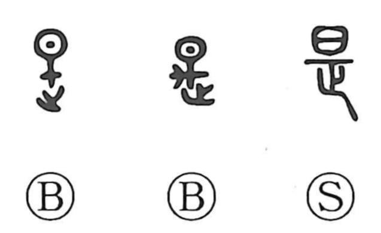

是

Kun: kore, kono | On: ze, shi
correct ・ right ・ this
Explanation
This character began as a pictograph of a spoon: the upper element, written as 日, sketches the bowl used for ladling, and the strokes below show the handle. That original graph, 是, first wrote the utensil, but when its sound was borrowed for the abstract senses of “right” and “good,” the component 匕 was added to create 匙, reserving that form for the spoon. In compounds such as 是非, 非 is itself the figure of a fine‑toothed comb, and its negative value also comes from a phonetic loan. In classical usage, 是 can stand in for 此 or 時 and thus mean “this” or “these.”